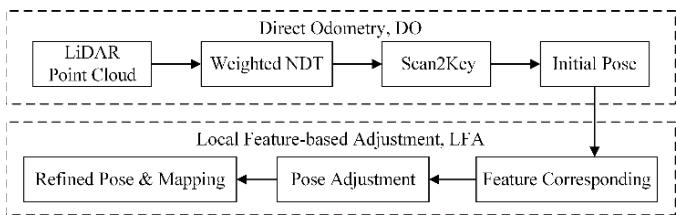

阶段 D · 激光主干 / Lesson 0076
两条变体路线：用分布替代特征，用多传感器兜住退化
骨架不动，只换一个零件——这一节能看到改装的两种典型思路 🔧
🎯 主题：加权 NDT · 关键帧 · 自适应协方差 · 退化
👥 作者：NDT-LOAM（Chen 等）· EKF-LOAM（Cruz Junior 等）
📅 2022 · 两篇组课
本节目标
读完你应该能：说清 NDT 与「提特征」的根本差别；解释「退化」为什么会让激光低估位移；并知道两种补洞思路各自的代价。
和前面课程怎么接
本节是「组课」——两篇论文都在上一节 0074 的 LOAM 骨架上改零件。其中 NDT 部分直接接第一季 0005 课（那篇讲的就是 SW-NDT）；「退化」概念接第一季 0006 课与 0009 课。
1. 先立一个框架：骨架不动，换零件
上一节我们看到 LeGO-LOAM 怎么在 LOAM 上做「减法」。这一节要看的是两种更激进 的改装——它们不是优化参数，而是把骨架里的某一个零件整个换掉 。
路线一：换掉「提特征」这个零件
NDT-LOAM 的做法是：前端不再提取角点与平面点 ，改用「正态分布变换」（NDT）直接做配准。它的性质很有意思——前端不提特征，后端仍然保留特征 。这是激光侧「提特征 vs 不提特征」这场辩论的第二个回合。
路线二：换掉「单一的位姿来源」
EKF-LOAM 面对的是完全不同的问题：在长而均质的隧道里，激光根本看不出自己在前进 。它的做法是插入一个扩展卡尔曼滤波，把轮速里程计与 IMU 融合进来当兜底。
注意这两条路线的方向是相反的：一条是「向内改造传感器数据的用法」，一条是「向外寻找额外的信息源」。 把它们放在一起看，正好能看清这一行论文的真实生态——大多数工作并不是提出新范式，而是把某个环节做得更好。
2. 路线一：把「提特征」换掉
先建立直觉。回顾一下 LOAM 的做法：先在点云里挑出「角点」和「平面点」，然后让这些点去找线/面。
NDT 走的路完全不一样：它不挑点，而是把空间切成一个个小格子，用「统计分布」来描述每个格子里的点。
同一面墙，两种描述方式：用一个一个点，还是用一个一个「分布」
① 特征法看世界：一个一个独立的点
墙面
挑出平面点（蓝框）与角点（红框）
配准时：点去找「线」或「面」
问的是「这个点离那条线/那个面多远？」
其余的点不参与
② NDT 看世界：一格一个分布
每个格子里是一个「扁椭圆」：中心是均值，形状是协方差
（扁＝这里的点铺成一个平面）
问的是「这个点落在这个分布里有多合理？」
配准＝调整位姿，让所有点的「似然」最大
不挑特征，所有点都用
这张图在画什么： 同一面墙，在「特征法」与「NDT」两种视角下被描述成的样子。怎么看这张图： ① 左格是 LOAM 的做法——挑出少数几个点 （蓝框是平面点、红框是角点），配准问的是「这个点离那条线/那个面多远」；② 右格是 NDT 的做法——空间被切成格子，每个格子里的点被压成一个椭圆 （中心是均值、形状是协方差），配准问的是「这个点落在当前这个椭圆里，有多合理」；③ 注意右边那个椭圆为什么是扁的 ：因为墙上的点只铺在一个平面方向上，所以协方差在一个方向上很大、另两个方向上很小。要记住的一句话： 特征法关心「点在几何基元上的距离 」，NDT 关心「点在统计分布里的似然 」。前者要先做「挑点」这个动作，后者不需要——这正是 NDT 能绕开「提特征」的原因。
这个思路其实你在第一季 0005 课已经见过一次（那篇讲的是 SW-NDT）。现在 NDT-LOAM 把它加权 之后塞进了 LOAM 的框架里当里程计。
它的结构可以概括成两个模块：
DO（直接里程计）
用加权 NDT 做配准，并且采用「Scan2Key」策略——当前帧不是去和上一帧配，而是去和最近的关键帧配 。这一步就是「不提特征」的那一半。
LFA（局部特征调整）
这一步就是 LOAM 原来的建图 ——用点到线/点到面的特征残差做精修。所以它在后端又把特征找回来了 。
所以 NDT-LOAM 的准确描述是：前端不提特征（用 NDT），后端保留特征（用 LOAM 的 LFA）。 这是一个很务实的混合方案——它没有彻底站队，而是取两边的好处。

原图注（Fig. 1）： System overview of NDT-LOAM.怎么看这张图： ① 顺着数据流往下看，注意它是怎么分成两段的——前面一段是 DO（直接里程计，用加权 NDT 配准关键帧），后面一段是 LFA（局部特征调整，用点到线/点到面精修） ；② 这个「前段不提特征、后段提特征」的混合结构，就是本课的核心设计；③ 可以对比一下上一节 LeGO-LOAM 的五模块流程图——骨架的形状很相似，被换掉的只是最前面的那一块。
3. 加权 NDT 到底加了什么权
经典 NDT 的目标是「让所有点落在各自分布里的似然之和最大」。NDT-LOAM 觉得这样不够——不同格子、不同距离的点，可信度本来就不一样 ，应该给它们不同的权重。
它加了两类权重：
距离权重：远处的点更重要
原文用的权重是「点离传感器的距离」$W_{r_k}=|x_k|$。同样的角度误差，落得越远、位置偏得越多 。想象你拿着一支激光笔，手抖了 1 度：打在 1 米处的墙上只偏了不到 2 厘米，打在 50 米外的大楼上偏了将近 1 米。所以远处的点对「角度是否准」更敏感，约束更强。
维数权重：像「面」的格子更可信
每个格子的协方差算出三个特征值 $\lambda_1\ge\lambda_2\ge\lambda_3>0$，据此判断这个格子里点的形状是「线」「面」还是「体」。像平面给 1.25、像立体给 1.0、像线给 0.75 。理由是平面约束最稳定 ——一条线只能约束两个方向，一个平面能约束一个方向但很明确。
把两类权重相乘，就得到加权 NDT 的目标函数：
配准就是调整位姿 $\xi$，让这个目标最大。然后用牛顿法迭代求解。原文实测，加权 NDT 比经典 NDT 的误差低约 12% ，而「Scan2Key」（对关键帧配准）比「Scan2Scan」（对上一帧配准）的平均误差几乎减半 。
4. 路线二：把「位姿来源」换掉
现在换一个完全不同的场景。
想象一台机器人开进了一条废弃的隧道 ：两侧是均质的混凝土墙，地面与天花板也是均质的，一眼望过去，每一段隧道长得都一模一样 。挂在车顶的激光雷达不停扫描，每帧都能测到墙、测到地面，数据一点都不缺。
但这里有一个致命的问题：它测不出自己前进了多少。
为什么？因为隧道是「平移不变」的——你往前开 10 米，激光看到的还是同一面墙、同一个地面。对配准算法来说，「我在起点」和「我往前 10 米」这两种假设，都能解释这帧点云。 于是它倾向于相信「我没怎么动」，结果就是位移被系统性低估 。
退化：为什么在均质隧道里，激光会「看不见自己在前进」
均质隧道（退化）
每一段都长得一样
?
走了几米？
「在起点」和「前进了 10 米」
都能解释同一帧点云
有特征的长廊（可定位）
有柱子、门、管道接口
柱子明显错开了
柱子、门的位置
随前进在地图里清楚移动
这张图在画什么： 同样是「一条长长的通道」，为什么左边的会让激光失效、右边的不会。区别只在于通道上有没有能区分位置的东西 。怎么看这张图： ① 左格里，隧道壁是完全均匀、等距的环 ——你往前开一段，看到的还是同样的一圈圈，所以「我在起点」与「我前进了 10 米」这两种假设都能解释同一帧数据 ，优化就倾向于相信「我没动」；② 右格里，长廊上有柱子、门、管道接口 这些不等间距的东西，随着前进它们在地图里的位置明显错开，于是「我动了多少」就能被观测到；③ 注意左格那个红色的问号 ——它不是「没数据」，而是「数据里没有能区分位置的信息」。要记住的一句话： 退化不是指数据变少 ，而是指数据里缺少某些方向上的信息 。这就是为什么原文要把轮速与 IMU 拉进来补洞——它们和激光「看到的」是两种完全不同的信息。
EKF-LOAM 的实测数字非常震撼。原文做了一条 200 米 的真实废弃隧道实验：
只用 LeGO-LOAM（激光）
200 米的隧道，它只估出了 87.37 米 ——误差 56.32% 。也就是说它认为机器人只走了不到一半的路。
只用轮速 + IMU
估出 207.40 米（略偏大），但轮速在转弯时会发散，单独不能用。
EKF-LOAM（融合后）
估出 200.35 米，误差 0.18% 。相对于纯 LeGO-LOAM，误差降低了 50% 以上 。
另一个更极端的实验是一条 300 米的虚拟圆管 ：LeGO-LOAM 的误差高达 74.19% （终点偏了 154 米），而 EKF-LOAM 只有 1.55% 。
原图注（Fig. 4）： System overview of the EKF-LOAM. The extended Kalman filter is integrated between front-end and back-end stages.怎么看这张图： ① 请特别看那个 EKF 方框的位置 ——它不在最前面，也不在最后面，而是夹在「激光里程计」与「建图」中间 ；② 数一数有几条箭头指进这个方框（轮速、IMU、激光里程计三条）；③ 这个位置很讲究：它在激光已经给出一个初步位姿之后介入 ，所以它能拿这个位姿去和轮速、IMU 比对，判断「这次激光是不是不可信」。
5. 自适应：特征越少，越不信激光
EKF-LOAM 里最漂亮的一个设计是「自适应协方差 」。这一节把它讲清楚——它是用一个量同时解决两个问题的经典例子。
先说明一个前提：在卡尔曼滤波里，每个传感器都带着一个「我有多不确定」的量（协方差）。这个量越大，滤波器就越不听它的。 所以「要不要信激光」这件事，本质上就是「怎么设置激光的协方差」。
EKF-LOAM 的做法是：让激光的协方差随「检测到多少特征」而变。
其中 $n_e$ 与 $n_p$ 分别是当前帧里检测到的边缘特征数与平面特征数 ，而 $\xi$ 是一个随特征减少而增大的因子（原文给的参数是 $n_e=500$、$n_p=5000$、下限 $\xi_{\min}=0.005$）。
读法： 特征多 → $\xi$ 小 → 激光协方差小 → 更信激光 ；特征少 → $\xi$ 大 → 激光协方差大 → 更信轮速与 IMU 。
还有一个更细致的处理：它按特征类型分别调整不同方向的协方差。 边缘特征主要约束水平方向与航向，平面特征主要约束高度与横滚/俯仰——所以这两类特征的多少，分别影响不同方向的信任度。这其实与上一节 LeGO-LOAM 的「两步优化」是同一个洞察：不同几何量管不同方向。
互动判断
EKF-LOAM 在隧道里把「激光的协方差」调大了。这个动作的直接效果是什么？
让激光估计变得更准
降低激光在融合中话语权
直接屏蔽掉激光数据
原图注（Fig. 15）： Mapping results in a multi-floor corridor using (a) LeGO-LOAM and (b) EKF-LOAM. LeGO-LOAM underestimation causes misalignment between lower and upper floors walls of about 9 m.怎么看这张图： ① 看 (a)——LeGO-LOAM 建出来的图里，上下两层的墙对不上，错开了大约 9 米 ，而且同一面墙出现了不止一份；② 这个错误不是「噪声」造成的，而是系统性低估 ：它每走一段就少算一点，走到头就差了近 10 米；③ 看 (b)——EKF-LOAM 把轮速与 IMU 融进来之后，楼层对齐了 。这是一个很典型的例子：退化的后果不是「地图模糊」，而是「结构上歪掉」。
6. 横向对比与边界
把两篇并排摆出来，两条路线的分工就很清楚了：
NDT-LOAM
EKF-LOAM
换掉了哪个零件 「提特征」——前端改用加权 NDT
「单一来源」——加入轮速与 IMU
改善什么 速度（10 Hz 实时）与精度
退化场景下的系统性低估
代价 高速 + 少特征场景仍差（高速路误差 >1%）
依赖轮速标定；没有轮子的平台用不了
关键数字 KITTI 上 0.899%（原 LOAM 约 0.88%，但它快 10 倍）
200 m 隧道：56.32% → 0.18%
原文承认的短板 无回环、无图优化
EKF 只校正速度态，长时间仍会累积位姿误差
一句话总结这两条路线
NDT-LOAM 在「传感器内部」找答案 ——同样是激光数据，换一种使用方式（分布替代特征）就能既快又准；EKF-LOAM 在「传感器外部」找答案 ——激光自己解决不了的问题，就再拿一个信息来源来补。
最后回到这一模块的主线。我们把三节课连起来看：
LOAM（提特征，两步优化）
但注意：这三节的系统都还是「纯激光」或「激光 + 一点惯性」 ，而且都有一个共同短板——没有回环、没有全局一致 。下一模块就要解决这件事：把 IMU 正式请进优化，并且把回环也装进同一张图。这就是 LIO-SAM 一系的开始。
课后练习
请说清 NDT 与「提特征」这两种做法的根本差别。为什么 NDT 不需要「挑点」这个动作？
展开查看答案
根本差别在于「用什么来描述局部几何」。
特征法的做法是：先把点分成「角点」与「平面点」两类 （用曲率等判据），然后让这些点去找对应的几何基元（线或面），残差是「点到线/面的垂直距离」。所以它必须先做一次「挑点」，其余的点不参与。
NDT 的做法是：把空间切成格子，每个格子里的点被压成一个高斯分布 （均值＋协方差）。配准时直接问「这个点落在当前这个分布里有多合理」，残差是「似然的负对数」。
为什么它不用挑点？ 因为「分布」这个描述本身已经把所有点都汇总进去了 ——它不需要选出「代表点」，而是用统计量（均值与协方差）概括整格的点。协方差的形状还会自动告诉你这里像面还是像线。挑点这个动作被「统计」替代了。
加权 NDT 给了两类权重。请分别说明它们是什么、为什么这样设。
展开查看答案
第一类：距离权重，权重值是「点到传感器的距离」，越远越大。
理由是几何的：同样的角度误差，投影到越远的地方、位置偏差越大。拿激光笔打比方——手抖 1 度，打在 1 米外的墙上只偏不到 2 厘米，打在 50 米外的大楼上偏了将近 1 米。所以远处的点对「角度准不准」更敏感 ，给出的约束更强。
第二类：维数权重，按格子里的点形状来定——像平面给 1.25、像立体给 1.0、像线给 0.75。
理由同样是几何的：平面约束最稳定明确 （它明确约束了一个法向方向）；立体的点散布在三个方向上，约束反而模糊；一条线只能约束两个方向、留一个自由度。所以原文给「像平面」最高的权重。
两类权重相乘，就得到每个格子的总权重。原文实测加权比不加权的经典 NDT 误差低约 12%。
「退化」这个词常常被误解成「数据变少了」。请以均质隧道为例，说明退化的准确含义。
展开查看答案
退化的准确含义是：数据里缺少某些方向上的信息。 而不是数据量少。
在均质隧道里，激光雷达每帧照样测到成千上万个点——墙面、地面、天花板都有。数据量一点都不少。问题出在隧道的平移不变性 ：你往前开 10 米，看到的还是同样的一圈圈环。对配准来说，「我在起点」与「我前进了 10 米」这两种假设都能同样好地解释这帧数据 。
于是在所有解释里，算法倾向于选一个去解释——结果就是「没怎么动」，位移被系统性低估。（原文实测：200 米的隧道，纯激光只估出 87.37 米。）
为什么叫「退化」？ 因为在数学上，此时待估参数在某些方向上的 Hessian 特征值趋于零 ——也就是「沿这个方向改变，代价几乎不变」。所以它不是「没数据」，而是「数据在某些方向上没有区分能力 」。这也解释了为什么补洞要靠完全不同类型的传感器：轮速与 IMU 提供的正是激光看不到的那部分信息。
EKF-LOAM 用「检测到的特征数」来调激光的协方差。为什么这个设计比「检测不到特征就直接不用激光」更好？
展开查看答案
因为它保留了一个连续的信任度，而不是做一个非黑即白的开关 。好处有三层：
① 避免「误判即失效」 ：如果做成硬开关，那么当特征数刚好卡在阈值附近时，系统会激烈地来回切换，输出会跳变。而自适应协方差是平滑过渡的——特征少一点就少信一点。
② 保留部分有用信息 ：即便在隧道里，激光也不是完全没用——它对横滚、俯仰、离墙距离 这些方向仍然是可靠的（隧道的墙面与地面仍然提供这些约束）。硬屏蔽会把这份信息一起丢掉。
③ 可以按方向分配信任 ：原文进一步做了「按特征类型调不同方向的协方差」——边缘特征少就调低水平方向与航向的信任，平面特征少就调低高度与横滚/俯仰的信任。这是一把「精调的旋钮」，比开关灵活得多。